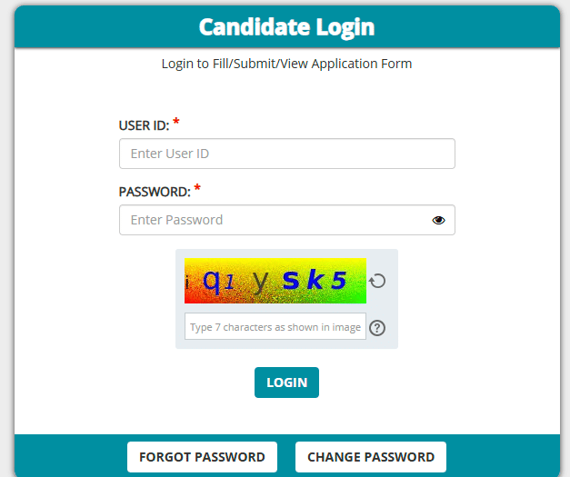
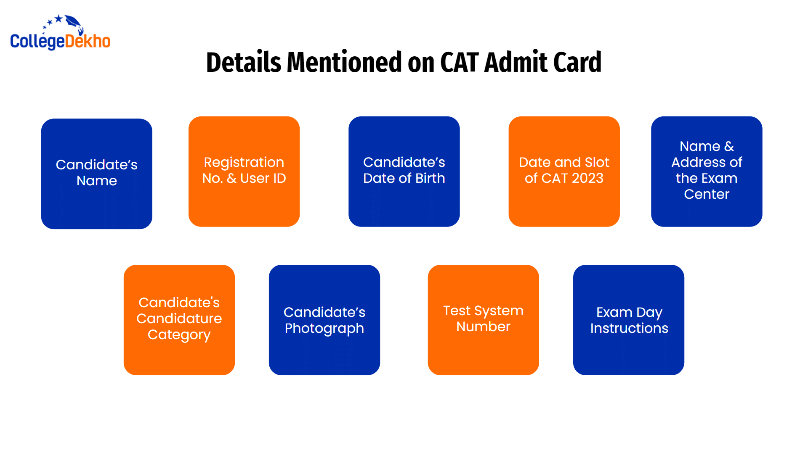
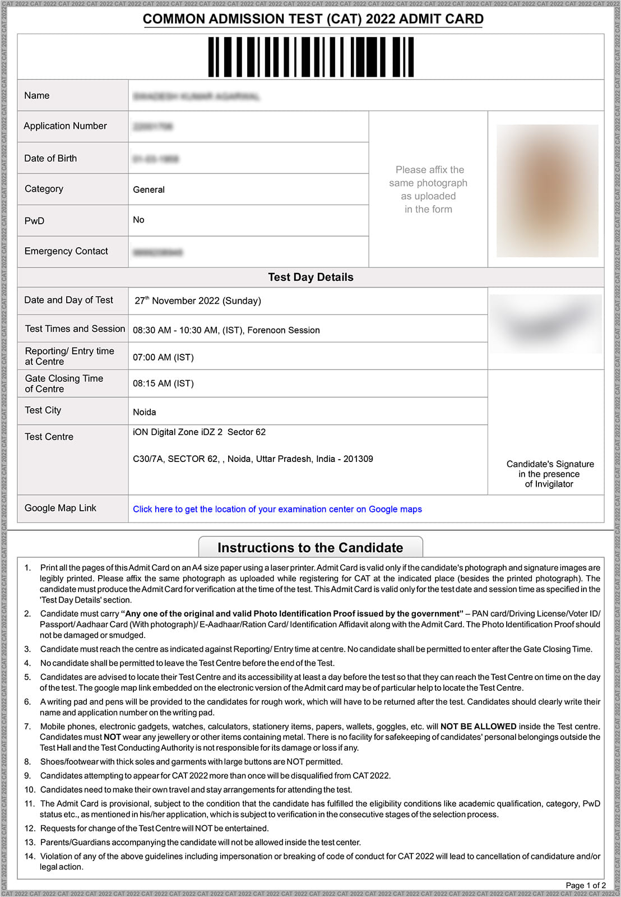
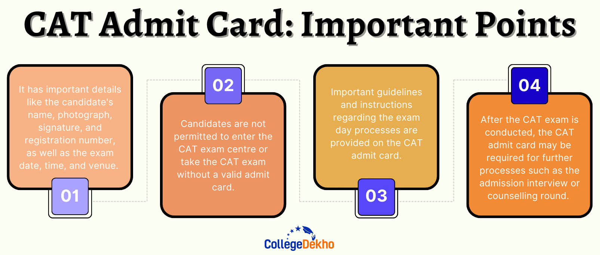
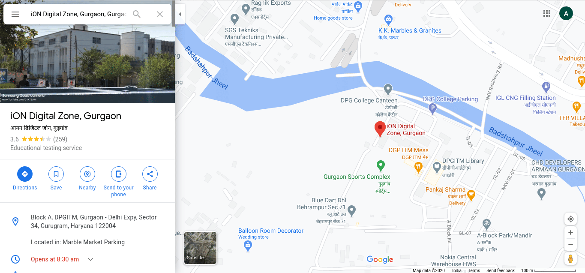
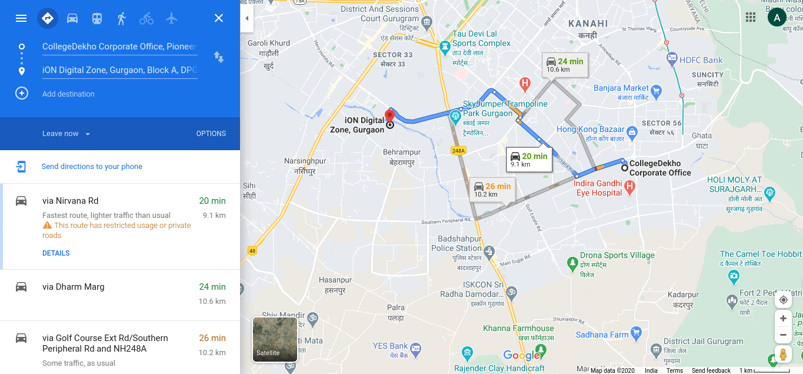
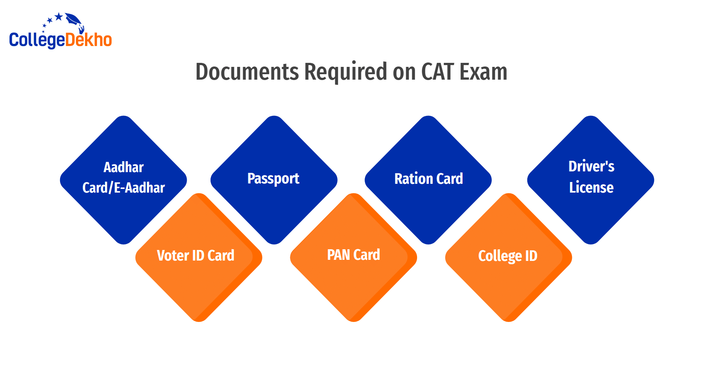
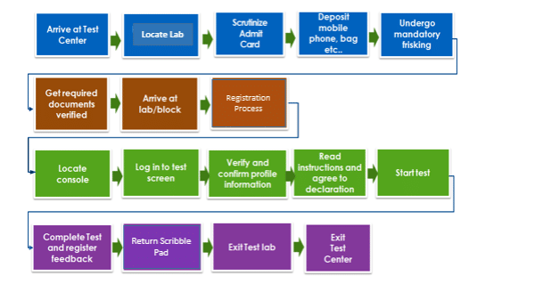

- We’re on your favourite socials!


Search for best colleges, Courses, Exams and Education updates
The CAT 2025 admit card has been released online today, November 12, 2025. It will include essential details such as registration numbers, exam centers, and candidate guidelines. Eligible candidates can download their admit cards from the official website using the direct link, which will be uploaded here.
Tell us your CAT score & access the list of colleges you may qualify for!
Predict My CollegeThe CAT 2025 admit card was released on November 12, 2025, and itwill be downloadable from the official website iimcat.ac.in till November 30, 2025. The CAT exam was held on November 30, 2025, in three different sessions. You will need to log in with your CAT login ID and password to access your admit card. The admit card download link for the CAT 2025 exam is updated below:
The CAT 2025 admit card is an important document you will need to carry to the exam center. Without it, you will not be permitted to sit for the exam under any circumstances. Ensure that you keep yourself informed about all the required details regarding the CAT 2025 admit cards, such as the dates of release, the step-by-step download procedure, essential guidelines on exam day, and the dos and don'ts to make the process seamless.
All important CAT 2025 exam dates are given in the table below:
Event | Date |
|---|---|
CAT Admit Card 2025 Release Date | November 12, 2025 (Out) |
CAT Admit Card 2025 Release Time | Around 12 Noon (Out) |
Last Date to Download CAT Admit Card 2025 | November 30, 2025 |
CAT Exam 2025 | November 30, 2025 |
To download the CAT 2025 admit card, follow the steps mentioned below:
Step 1: Visit the official website of IIM CAT 2025, i.e. iimcat.ac.in.
Step 2: Click on the 'Registered Candidate Login' link.
Step 3: Enter your login credentials, i.e. CAT User ID and Password, and click the 'Login' button.

Step 4: After successful login, click on the CAT Admit Card 2025 link.
Step 5: Click on 'Download Admit Card'.
Step 6: Once the download completes, check all the details provided on the CAT admit card 2025.
Step 7: Take a few printouts of the CAT hall ticket and keep it safe for future use.
Also Read: How to Download CAT 2025 Admit Card Online?
Ques: Are there any alternative links for the CAT 2025 hall ticket download?
Ans: No, the only official download link for the CAT 2025 hall ticket is through the official site Indian Institute of Management Kozhikode via iimcat.ac.in. Avoid any unofficial alternate links since they may be unsafe or invalid.
Ques: What is the last date for CAT admit card download?
Ans: The last date to download the hall ticket for CAT 2025 is 30 November 2025 (the exam day). It is advisable to download the CAT admit card earlier to avoid any kind of issues like invalid download link, internet connection issues, incorrect details, etc.
Ques: Is there a limit to the number of times I can use the CAT 2025 admit card download link?
Ans: There is no specific limit mentioned on how many times you can download the CAT 2025 admit card: you should be able to log in and download it multiple times between its availability window (12 Nov 2025 to 30 Nov 2025) and until the exam day.
While downloading the admit card for CAT 2025, you may face certain issues. However, you should not panic and remain patient while trying to resolve the issue. Here are some common problems that may arise during the CAT admit card download process, along with solutions to help resolve them.
Problem | How to Resolve |
|---|---|
| Slow Internet Connection | Check the speed of your internet connection. If it is slow, move to a faster internet connection. |
| Incorrect Login Credentials | If you forget your CAT 2025 user ID and password, click on the ‘forgot password’ and follow the instructions to change your password/credentials. |
| Technical Issue | The CAT 2025 website may have technical glitches due to heavy traffic or any other reason. If this happens, visit the website later to download your CAT admit card 2025. |
Ques: How many soft copies of the CAT admit card 2025 should I keep for safety?
Ans: You may keep as many soft copies of the CAT admit card 2025 as you like. However, you must also keep enough hard copies since a physical CAT hall ticket is required at the exam center. You may keep one soft copy on your PC and another one in your mobile device for safety.
Ques: Why does the CAT admit card download link not work?
Ans: Sometimes the CAT admit card download link may not work due to excessive internet traffic, erratic internet connection, or the CAT 2025 official website malfunctioning. If you face this problem, try again after some time or you may use a different internet browser.
You need to follow CAT 2025 exam day instructions for a smooth and hassle-free experience. If you are found to violate the rules set by IIMs during the CAT exam, you will be refrained from taking the exam, Thus, ensure to follow the do's and don'ts on the CAT 2025 exam day mentioned below.
Do's | Don'ts |
|---|---|
|
|
CAT admit card contains important details about you that are necessary to gain entry to the exam hall. The following details are mentioned on the CAT 2025 admit card:

Candidate’s Name
Registration No. & User ID
Date of Birth
Date and Slot of CAT 2025
Name & Address of the Exam Center
Candidate's Candidature Category
Candidate’s Photograph
Test System Number
Candidate’s Signature
Exam Day Instructions
You must ensure that the details mentioned on your CAT admit card 2025 are the same as those provided during the registration. In case there is some mistake, contact the authorities immediately. Carrying the CAT hall ticket with the wrong details may not gain you access to the exam centre.
Ques: Can I print my CAT 2025 hall ticket at the exam center?
Ans: No, you cannot print your CAT 2025 hall ticket at the exam centre. The admit card must be downloaded online from the official portal and brought in printed form to the exam centre.
Ques: What will happen if my CAT admit card has incorrect information on exam day?
Ans: If you arrive at the CAT exam center with incorrect details on your CAT admit card you may risk being denied entry to exam hall. You must report any discrepancy in your admit card immediately to the CAT help desk.
Ques: Can I be denied entry to the CAT exam center due to photo ID mismatch issues?
Ans: Yes, you can be denied entry to the CAT 2025 exam centre if your photo ID does not match the details (name, date of birth, photograph) on your CAT admit card or registration records. It’s essential to carry a valid government-issued ID that exactly matches your records.
The CAT 2025 exam will be held in three different time slots on November 30, 2025. These time slots are allocated to the students on a first-come-first-serve basis. Here is the table of the timings of all the time slots:
CAT Exam Slot | Exam Timings | Reporting Time | Last Entry Allowed |
|---|---|---|---|
Slot 1 | 8:30 AM to 10:30 AM | 7:00 AM | 8:15 AM |
Slot 2 | 12:30 PM to 2:30 PM | 11:00 AM | 12:15 PM |
Slot 3 | 4:30 PM to 6:30 PM | 3:00 PM | 4:15 PM |
Here's a sample of the CAT admit card to help you understand what details will be mentioned on it.

The CAT admit card 2025 is an important document that must be kept safe before and after the exam due to the following reasons:

Hence, long before the CAT exam day, you must download the CAT admit card 2025 from the official CAT website. You must verify the accuracy of all the information on it. Until the full CAT admissions procedure is over, it is crucial to keep the admit card secure.
It's not uncommon to forget your login credentials while downloading the CAT hall ticket. If that happens, the CAT conducting authority offers an option to reset the credentials. Here are the steps you need to follow to recover your CAT login details:
Once you download your CAT admit card 2025, you must check all the information mentioned there. The points listed below should tally with the information given during the CAT registration 2025:
Particulars | Details |
|---|---|
Name of the Candidate | It must be exactly the same as mentioned in the CAT 2025 application form. Your name should not be misspelt. |
CAT 2025 Registration Number | It must be the same as the registered user ID. |
| Date of Birth | It should be the same as mentioned on the CAT application form and official documents |
Caste Category Status | It must be correct and the same as mentioned in CAT application form 2025 |
PwD/DA Status | It must be correct and the same as mentioned in CAT application form |
| Test Centre Location | Must be among one of the 4 options mentioned in the CAT application form |
Candidate's Photograph and Signature | They must be clearly visible |
CAT admit card 2025 mentions exam-related and candidate-specific details. Therefore, you must verify all the details before downloading it. In case you find any discrepancy in the CAT2025 admit card, you must immediately contact the CAT Helpdesk. It must be noted that providing the CAT hall ticket with incorrect details on the exam day may not get you entry to the exam hall.
CAT Helpdesk Email Address | cathelpdesk@iimcat.ac.in |
|---|---|
CAT Helpline Desk Number | 1-800-209-0830 (Toll-free) |
Ques: How long does it take to rectify errors in the CAT admit card 2025?
Ans: The exact time for rectifying errors in your CAT 2025 admit card isn’t specified by the exam conducting authorities. However, you should contact the official help desk immediately upon noticing a mistake to increase your chances of resolution before the exam.
Ques: What will happen if I am not able to rectify an error in my CAT hall ticket 2025?
Ans: If you’re unable to rectify an error on your CAT 2025 hall ticket, there is a risk you may not be allowed to enter the exam centre, especially if the error affects your identity, slot details, or test centre.
To help you locate your test centre, IIMs embed a Google Maps link to the CAT 2025 exam centre address on the admit card. To locate the exam centre with the Google Maps link given on the CAT admit card 2025, you can follow the steps given below:


In 2021, a new feature was added to the CAT admit card - the Google Maps link. This feature enables you to locate your exam centres with ease and eliminates any last-minute confusion. By clicking on the link, you can check the distance, the time required, and directions to reach the test centre accurately.
The contact number of the exam centre will also be available through this. You can use this for any location-related queries. If you are using this facility via laptop, you can use the "Send directions to your phone" option to get directions on your phone.
Ques: What to do if the Google Map link on my CAT admit card is not working?
Ans: If the Google Map link on your CAT admit card is not working, you may manually type in the address given on your admit card in Google Maps.
Ques: Can the CAT 2025 admit card Google Map link have the wrong location?
Ans: Yes, it’s possible that the CAT 2025 admit card’s Google Map link could lead to a slightly wrong or outdated location (e.g., changed venue, map pin error). If you find such a mismatch, contact the exam authorities immediately to clarify the correct centre.
Apart from the CAT admit card, you also need to carry a valid identity proof to the CAT exam centre. The list of the accepted IDs has been mentioned below.

Aadhaar card
Voter ID
Passport
PAN card
E-Aadhaar
Ration Card
College/University ID
Driver's License
The exam day workflow of CAT 2025 is given below:

You can refer to the following table for the detailed schedule of how CAT 2025 will be conducted.
Shift 1 | Shift 2 | Shift 3 | Activity | Time Taken |
|---|---|---|---|---|
7 AM | 11 AM | 3 PM | Reaching the test centre (reporting time) | - |
7:05 AM | 11:05 AM | 3:05 PM | Locating the test lab number | 1-5 Minutes |
7:10 AM | 11:10 AM | 3:10 PM | Admit card check | 1-5 Minutes |
7:15 AM | 11:15 AM | 3:15 PM | Depositing personal belongings (mobile phone, bag, etc.) | 1-10 Minutes |
7:25 AM | 11:25 AM | 3:25 PM | Frisking of the candidates | 3-5 Minutes |
7:30 AM | 11:30 AM | 3:30 PM | Document (ID and admit card) checking at the test Lab entrance | 1-10 Minutes |
7:40 AM | 11:40 AM | 3:40 PM | Reaching test labs | 1-10 Minutes |
7:50 AM | 11:50 AM | 3:50 PM | Reaching the registration desk and signing (manual) the attendance sheet | 1-5 Minutes |
7:55 AM | 11:55 AM | 3:55 PM | Photograph and IRIS captured | 1-10 Minutes |
8:05 AM | 12:05 PM | 4:05 PM | Candidates check their photo in the registration terminal to make sure it is their photo | 1-5 Minutes |
8:10 AM | 12:10 PM | 4:10 PM | Receiving the scribble pad from the invigilator and sitting at the terminal | 1-5 Minutes |
8:15 AM | 12:15 PM | 4:15 PM | Logging into the test screen | 1-5 Minutes |
8:20 AM | 12:20 PM | 4:20 PM | Verifying and checking the profile information | 1-5 Minutes |
8:25 AM | 12:25 PM | 4:25 PM | Reading and agreeing with the declaration | 1-5 Minutes |
8:30 AM | 12:30 PM | 4:30 PM | The exam begins | - |
10:30 AM | 2:30 PM | 6:30 PM | The exam is over | 120 Minutes |
10:35 AM | 2:35 PM | 6:35 PM | Returning the scribble pad | 1-5 Minutes |
10:40 AM | 2:40 PM | 6:40 PM | Exiting the test lab and collecting the deposited belongings | 1-5 Minutes |
10:45 AM | 2:45 PM | 6:45 PM | Leaving the test centre | - |
Ques: How early can I get the CAT admit card and other documents verified at the exam center?
Ans: You can get the CAT admit card and other documents verified at the exam center as soon as the entry gate opens. You should aim to be at the exam centre for CAT 2025 at least 90 minutes before your scheduled slot begins.
Ques: Do I need the CAT hall ticket 2025 to exit the exam center?
Ans: According to available guidelines for CAT 2025, the printed CAT admit card (hall ticket) is required for entry into the exam centre. There’s no explicit mention that the admit card must be presented at exit when leaving the exam hall.
Every year, the CAT hall ticket is issued by the concerned IIM around a month before the exam date. However, before 2018, there used to be a gap of 40 or more days. Learn more about it below:
CAT Exam Year | Conducting Body | CAT Exam Date | CAT Admit Card Release Date | Gap |
|---|---|---|---|---|
CAT 2023 | IIM Lucknow | November 26, 2023 | November 7, 2023 | 18 Days |
CAT 2022 | November 27, 2022 | October 27, 2022 | 30 Days | |
CAT 2021 | November 28, 2021 | October 27, 2021 | 31 Days | |
CAT 2020 | November 29, 2020 | October 28, 2020 | 31 Days | |
CAT 2019 | November 24, 2019 | October 23, 2019 | 31 Days | |
CAT 2018 | November 25, 2018 | October 24, 2018 | 31 Days | |
CAT 2017 | IIM Lucknow | November 26, 2017 | October 18, 2017 | 40 Days |
CAT 2016 | IIM Bangalore | December 4, 2016 | October 18, 2016 | 46 Days |
Want to know more about CAT
No, you will receive a hard copy of your CAT admit card 2025. It will only be accessible online and can be downloaded from the official IIM CAT website. You will have to print out the admit card and take the hard copy to the exam centre.
No, there is no obligation to carry a colour printout of the CAT admit card 2024. It does not need to be printed in colour, but it should be legible. You are permitted to take a black-and-white admit card, however, a colour printout is considered good for a better view.
Yes, there is a Google map link to the exam centre given on CAT admit card 2025. This feature was introduced by the IIMs to help candidates locate their respective CAT exam centres easily. You can pinpoint the precise exam centre address using this Google Maps link feature, preventing any last-minute uncertainty.
Along with the CAT admit card 2025, you should carry any of the government-issued IDs to the CAT exam centres. These may include original voter ID, driving license, Aadhar card, PAN card, passport, etc. A photocopy of the ID will not be accepted, so if you fail to bring an original and valid ID document, you will not be allowed to take the exam.
If you find an error in your CAT admit card 2025, you should immediately contact the CAT help desk. The mistakes could be in your personal information, such as your name or date of birth being printed wrongly on the admit card. Any error in the CAT admit card 2025 may cause you trouble during entry to the exam hall.
No, you cannot only carry the digital copy of the CAT admit card 2025. It is mandatory to carry a hard copy of the CAT 2025 admit card. Along with this, you will have to carry any of the government-issued IDs to your respective CAT exam centres.
Yes, it is mandatory to carry the CAT admit card 2025 to the exam centre. If you forget to bring a hard copy of your admit card to the exam centre, you will not be allowed to sit for the examination. No digital copy of the admit card is allowed.
CAT admit card 2025 includes details like the Candidate’s Name, Registration Number and User ID, Date of birth, Date and slot of CAT 2025, Name of the Exam centre and address, Google Map link to the exam centre, Category, Candidate's Photograph & Signature, Test system number, Exam day Instructions, etc.
To download the CAT admit card 2025, first visit the official IIM CAT website at iimcat.ac.in. Next, click on the ‘login’ option and enter your User ID and Password. Then select the ‘CAT 2025 admit card’ option, click to download, and save the PDF for future use. Lastly, print a copy of the admit card.
When downloading the CAT admit card 2024, sometimes the IIM CAT website may not be working when it witnesses heavy traffic. In such a case, you must not worry and wait for some time for the website to be restored. After an hour or so, you can download the CAT admit card.
You should carry two printouts of the CAT admit card 2025 to the exam centre. Entry to the exam hall will not be possible if you do not have a hard copy of the admit card. A digital copy of the CAT admit card is not allowed.
The CAT admit card 2025 release date is November 2025. It has been released by IIM Calcutta on the official IIM CAT website at iimcat.ac.in. Only those who have successfully registered and paid the application fee will receive the CAT 2025 admit card.
Typical response between 24-48 hours
Get personalized response
Free of Cost
Access to community